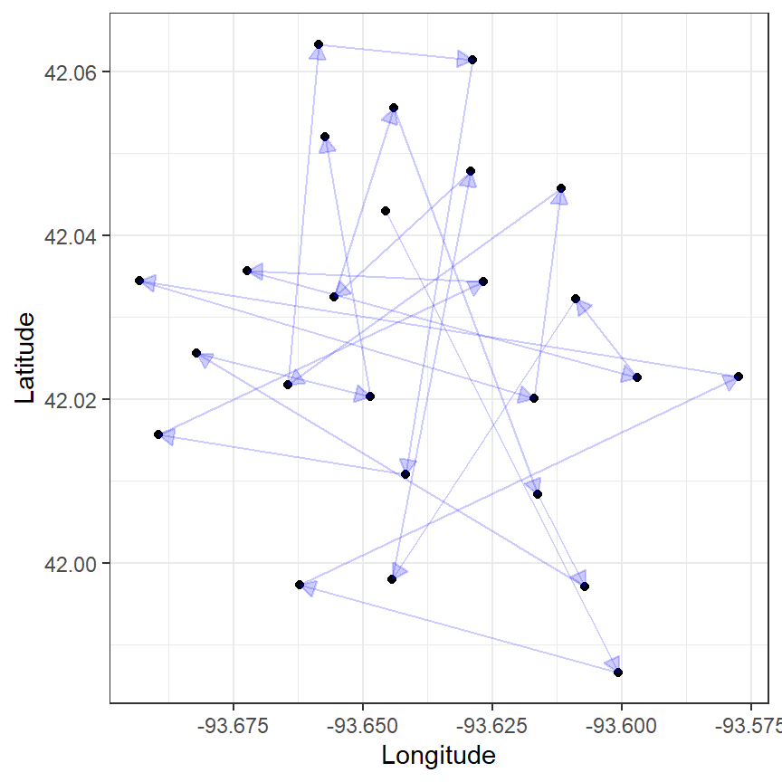

req_pkg <- c("caret", "tidymodels")
# Check to see if they are installed:
if (!rlang::is_installed(req_pkg)) {
pak::pak(req_pkg)
}3 Initial Data Splitting
We’ll illustrate how to conduct an initial split of your data into different partitions (used for different purposes).
3.1 Requirements
You’ll need 2 packages (caret and tidymodels) for this chapter. You can install them via:
Let’s load the meta package and manage some between-package function conflicts.
The data used here are both in R packages that are already installed. Let’s work with the primary data set: the Ames Iowa housing data.
3.2 The Ames Housing Data
These data are in the modeldata package, which is part of tidymodels. Let’s load the data, subset a few columns, and modify the sale price units. We’ll also combine the two bathroom-related columns into a single column.
Rows: 2,930
Columns: 11
$ Sale_Price <dbl> 5.332438, 5.021189, 5.235528, 5.387390, 5.278525, 5.29114…
$ Bldg_Type <fct> OneFam, OneFam, OneFam, OneFam, OneFam, OneFam, TwnhsE, T…
$ Neighborhood <fct> North_Ames, North_Ames, North_Ames, North_Ames, Gilbert, …
$ Year_Built <int> 1960, 1961, 1958, 1968, 1997, 1998, 2001, 1992, 1995, 199…
$ Gr_Liv_Area <int> 1656, 896, 1329, 2110, 1629, 1604, 1338, 1280, 1616, 1804…
$ Year_Sold <int> 2010, 2010, 2010, 2010, 2010, 2010, 2010, 2010, 2010, 201…
$ Lot_Area <int> 31770, 11622, 14267, 11160, 13830, 9978, 4920, 5005, 5389…
$ Central_Air <fct> Y, Y, Y, Y, Y, Y, Y, Y, Y, Y, Y, Y, Y, Y, Y, Y, Y, Y, Y, …
$ Longitude <dbl> -93.61975, -93.61976, -93.61939, -93.61732, -93.63893, -9…
$ Latitude <dbl> 42.05403, 42.05301, 42.05266, 42.05125, 42.06090, 42.0607…
$ Baths <dbl> 1.0, 1.0, 1.5, 2.5, 2.5, 2.5, 2.0, 2.0, 2.0, 2.5, 2.5, 2.…tidymodels requires that, for outcome data, any basic transformations should occur before data splitting.
3.3 Simple Data Splitting
There are a few main functions for an initial split:
-
rsample::initial_split(): completely random splits and stratified splits. -
rsample::initial_time_split(): non-random splits for times series; the most recent data are used for testing. -
rsample::initial_validation_split()andrsample::initial_validation_time_split(): an initial split into three partitions. -
rsample::group_initial_split(): for situations with repeated measures or other important grouping factors.
Most of our applications will use the first function, where the default is to use 75% for training and 25% for testing. This is determined at random; there is no need to randomly sort the rows before splitting. By default, a simple random split is used.
For the Ames data, we know that the distribution of sale prices has some outlying points. To deal with this, we’ll use a stratified split (on the outcome) using 5 quantiles of the data in ames:
<Training/Testing/Total>
<2196/734/2930>The output shows the size of the resulting data sets. To get the two data sets, there are simple accessor functions:
Consistent with the printed output, there are 2,196 data points in the training set and 734 reserved for testing.
We won’t touch on initial_time_split() here but only mention that it takes the fraction of the data specified for testing from the bottom/tail of the data frame. Unlike the previous function, the order of the rows matters.
group_initial_split() and initial_validation_split() are discussed in more detail below.
3.4 Using the Predictors
Instead of using the outcome to partition the data, other columns can be used when applicable. The text mentions using the twinning package (CRAN page). The same authors have a second approach that can be found in the SPlit package (CRAN). Both are straightforward to use.
Maximum dissimilarity sampling can be conducted using caret::maxDissim(). It starts with an initial set of one or more or fewer data points to use as a starter. Unless there is a specific set of points of interest, picking one close to the center of the multivariate predictor distribution might make sense. Here is some code that uses the geographic coordinates as the splitting variables:

3.5 Multi-Level Data
This section will focus on data with a rational grouping of data. For example, medical data might follow patient over time so that there are multiple rows per patient. The patient is the independent experimental unit (IEU), meaning that the data between patients are thought to be independent, and those within a patient are (statistically) related. We want to partition the data so that all of the data for each IEU end up in either the training or test sets but not both. We want to sample the data by the group – where the group in this example is the patient.
There are other applications of grouped data but the example data that we’ll use fits into the description above: 27 patients were followed and had data collected at four time points. The data are in the nlme package:
Rows: 108
Columns: 4
$ distance <dbl> 26.0, 25.0, 29.0, 31.0, 21.5, 22.5, 23.0, 26.5, 23.0, 22.5, 2…
$ age <dbl> 8, 10, 12, 14, 8, 10, 12, 14, 8, 10, 12, 14, 8, 10, 12, 14, 8…
$ Subject <ord> M01, M01, M01, M01, M02, M02, M02, M02, M03, M03, M03, M03, M…
$ Sex <fct> Male, Male, Male, Male, Male, Male, Male, Male, Male, Male, M…To use rsample::group_initial_split(), we must supply a group argument that corresponds to one of the columns in the data. There is also a prop argument that specifies the proportion of the groups that should go into the training set.
<Training/Testing/Total>
<72/36/108>From here, the code to get the resulting data sets is the same as previously shown. We’ll also verify that no subjects are in both data sets:
character(0)3.6 Validation Sets
To add a validation set at the outset, initial_validation_split() works the same as initial_split(). The prop argument requires two values now: the first is the training set proportion, and the second is for the validation set. In this example below, we add 80% to training, 10% to validation, and the remaining 10% to the testing set:
<Training/Validation/Testing/Total>
<2342/293/295/2930>Again, the acquisition of data is the same but has the additional use of the validation() function:
rsample::initial_validation_time_split() does the same thing but based on the ordering of the data (as opposed to random selection).
Suppose a data frame had 100 rows. Using prop = c(0.8, 0.1) would place the first 80 rows into training, the next 10 into validation, and the last 10 into testing. Keeping the data appropriately ordered is important when using validation sets in tidymodels.